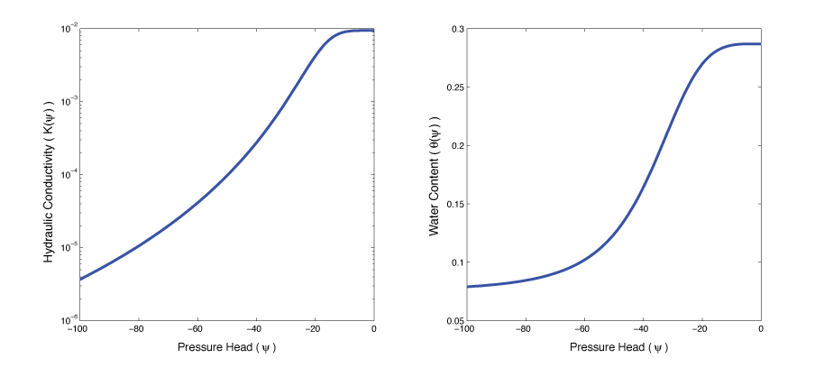
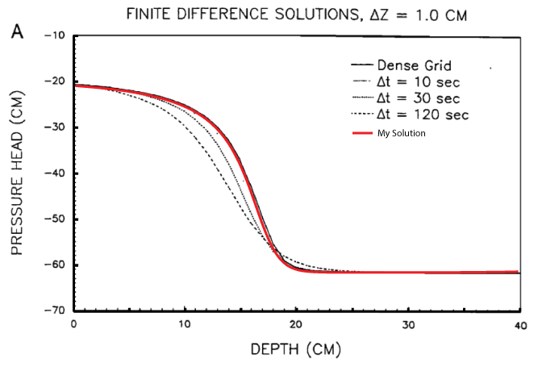

Non-Linear Relations
Relation between water content, hydraulic conductivity, and pressure head can be described by empirical models:
$\theta(\psi) = \frac{\theta_s - \theta_r}{[1+(\alpha|\psi|)^n]^m} + \theta_r,$
$K(\psi) = \frac{K_s \left\{ 1- (\alpha|\psi|)^{n-1} [1+(\alpha|\psi|)^n]^{-m} \right\}^2}{[1+(\alpha|\psi|)^n]^{m \epsilon}}$
Fitting Parameters:
$K_s$,$\alpha$, $n$, $m$, $\epsilon$, ...
Van Genuchten
Empirical model (5 fitting parameters)

Time Discretization
Fully Implicit Backward Euler
$\frac{\theta(\psi^{n+1}) - \theta(\psi^{n})}{\Delta t} = \nabla \cdot K(\psi^{\color{red}{n+1}}) \nabla \psi^{\color{red}{n+1}} + \frac{\partial K(\psi^{\color{red}{n+1}})}{\partial z}$
Newton Root Finding (or variant)
$
\Phi^m =
\frac{\theta(\color{green}{\psi^{n+1,m}}) - \theta(\psi^n)}{\Delta t}
- \nabla \cdot K(\color{green}{\psi^{n+1,m}}) \nabla \color{green}{\psi^{n+1,m}}
- \frac{\partial K(\color{green}{\psi^{n+1,m}})}{\partial z}
$
$\partial \psi = - \mathbf{J}^{-1}_{\psi^{n+1,m}} \Phi^m(\psi^{n+1,m})$
$\psi^{n+1,m+1} = \psi^{n+1,m} + \alpha \partial \psi$
Time Stepping Schemes
Explicit:
$C(\psi^{\color{red}{n}})\frac{\psi^{n+1} - \psi^{n}}{\Delta t} = \nabla \cdot K(\psi^{\color{red}{n}}) \nabla \psi^{\color{red}{n}} + \frac{\partial K(\psi^{\color{red}{n}})}{\partial z}$
Semi-Implicit:
$C(\psi^{\color{red}{n}})\frac{\psi^{n+1} - \psi^{n}}{\Delta t} = \nabla \cdot K(\psi^{\color{red}{n}}) \nabla \psi^{\color{red}{n+1}} + \frac{\partial K(\psi^{\color{red}{n}})}{\partial z}$
Fully-Implicit (Chain-Rule):
$C(\psi^{\color{red}{n+1}})\frac{\psi^{n+1} - \psi^{n}}{\Delta t} = \nabla \cdot K(\psi^{\color{red}{n+1}}) \nabla \psi^{\color{red}{n+1}} + \frac{\partial K(\psi^{\color{red}{n+1}})}{\partial z}$
Fully Implicit:
$\frac{\theta(\psi^{n+1}) - \theta(\psi^{n})}{\Delta t} = \nabla \cdot K(\psi^{\color{red}{n+1}}) \nabla \psi^{\color{red}{n+1}} + \frac{\partial K(\psi^{\color{red}{n+1}})}{\partial z}$
Newton Root Finding
To find $\psi^{n+1}$ use an inner iteration $m=0,1,2,...$
Start by using: $\psi^{n+1,0} \leftarrow \psi^n$
$
\Phi^m =
\frac{\theta(\color{green}{\psi^{n+1,m}}) - \theta(\psi^n)}{\Delta t}
- \nabla \cdot K(\color{green}{\psi^{n+1,m}}) \nabla \color{green}{\psi^{n+1,m}}
- \frac{\partial K(\color{green}{\psi^{n+1,m}})}{\partial z}
$
$J = \frac{\partial \Phi^m}{\partial \color{green}{\psi^{n+1,m}}}$
$\Phi^m(\psi+\partial \psi) = \Phi^m(\psi) + J \partial \psi +O(h^2)$
Linearize, set to 0, find update $\partial \psi$
$\partial \psi = - J^{-1} \Phi^m(\psi)$
$\psi^{n+1,m+1} = \psi^{n+1,m} + \alpha \partial \psi$
Choose $\alpha$ to ensure sufficient decrease in $\Phi$
Iterate until $\Phi^{m+1} \approx 0$
Comparison to Literature

Objective Function
The pressure head is calculated at all locations and times through the nonlinear function $\mathbf{A(m)}$.
$\mathbf{d(m)}=\mathbf{Q} \mathbf{A(m)}$
$\Phi ( \mathbf{m} ) = \frac{1}{2}\left\|\mathbf{W}(\mathbf{d(m)- d_{obs}})\right\|^2_2+ \frac { \beta }{ 2 } { \left\| \bf G_w(\bf m-{ \bf m }_{ ref }) \right\| }^2_2$
$\nabla \Phi ( \mathbf{m} ) = \bf J^\top W^\top W(d(m) - d_{obs})+\beta G_w^\top G_w(m-m_{ref})=\bf g$
$\nabla^2 \Phi ( \mathbf{m} ) \approx \bf J^\top W^\top W\bf J+\beta G_w^\top G_w=\bf H$
Optimize using Inexact Gauss-Newton
Requires derivatives in both space and time!
Inexact Gauss-Newton
Approximately solve for a search direction:
$\mathbf{H}\partial \mathbf{m} = - \mathbf{g}$
Backtracking linesearch:
$\mathbf{m}_{i+1} = \mathbf{m}_i + \alpha\partial \mathbf{m}$
Continue until $\mathbf{g}$ or $\alpha\partial\mathbf{m}$ is small
Derivative
Richards equation is a function of $m$ at every time-step
\(
\def\n{^n}
\def\nn{^{n+1}}
\def\deriv#1#2{\frac{\partial #1}{\partial #2}}
\def\DIV{\nabla \cdot}
\def\GRAD{\nabla}
\def\diag#1{\text{diag}\left(#1\right)}
\)
$
F(\psi\n,\psi\nn,m) =
\frac{\theta\nn(\psi\nn) - \theta^n(\psi\n)}{\Delta t}
-
\nabla \cdot K(\psi\nn,m)\nabla \psi\nn
-
\frac{\partial }{\partial z} K(\psi\nn,m)
= 0
$
Take the devivative, $\deriv{F(\psi\n,\psi\nn,m)}{m}$
$
\begin{align*}
\frac{1}{\Delta t}
\left(
\deriv{\theta\nn}{\psi\nn}\deriv{\psi\nn}{m}
-
\deriv{\theta\n}{\psi\n}\deriv{\psi\n}{m}
\right)
-
\DIV \diag{\GRAD \psi\nn}
\left(
\deriv{K}{m} + \deriv{K}{\psi\nn}\deriv{\psi\nn}{m}
\right)
\nonumber\\
-
\DIV K(\psi\nn) \GRAD \deriv{\psi\nn}{m}
-
\deriv{}{z}
\left(
\deriv{K}{m} + \deriv{K}{\psi\nn}\deriv{\psi\nn}{m}
\right)
=0
\end{align*}
$
Can be written in block matrix form:
$\mathbf{J}_m = \mathbf{Q} \mathbf{A}(\Psi,m)^{-1} \mathbf{B}(\Psi,m)$
Block Matrix Form
$
\begin{align*}
\overbrace{
\left[
-\frac{1}{\Delta t} \deriv{\theta\n}{\psi\n}
\right]
}^{\mathbf{A}_{-1}(\psi\n)}
\deriv{\psi\n}{m}
+
&
\overbrace{
\left[
\frac{1}{\Delta t} \deriv{\theta\n}{\psi\nn}
-\DIV \diag{\GRAD \psi\nn}\deriv{K}{\psi\nn}
-\DIV K(\psi\nn) \GRAD
-\deriv{}{z}\deriv{K}{\psi\nn}
\right]
}^{\mathbf{A}_0(\psi\nn)}
\deriv{\psi\nn}{m}
\nonumber\\
=
&
\underbrace{
\DIV \diag{\GRAD \psi\nn}\deriv{K}{m}
+\deriv{}{z}\deriv{K}{m}
}_{\mathbf{b}(\psi\nn,m)}
\end{align*}
$
$
\overbrace{
\left[
\begin{array}{cccccc}
\mathbf{A}_0(\psi_1)&&&\\
\mathbf{A}_{-1}(\psi_1)&\mathbf{A}_0(\psi_2)&&\\
&\mathbf{A}_{-1}(\psi_2)&\mathbf{A}_0(\psi_3)&\\
&&\ddots&\ddots&&\\
&&&\mathbf{A}_{-1}(\psi_{n-1})&\mathbf{A}_0(\psi_n)\\
\end{array}
\right]
}^{\mathbf{A}(\Psi,m)}
\overbrace{
\left[
\begin{array}{c}
\deriv{\psi_1}{m}\\
\deriv{\psi_2}{m}\\
\vdots\\
\deriv{\psi_{n-1}}{m}\\
\deriv{\psi_n}{m}\\
\end{array}
\right]
}^{\deriv{\Psi}{m}}
=
\overbrace{
\left[
\begin{array}{c}
\mathbf{b}(\psi_1,m)\\
\mathbf{b}(\psi_2,m)\\
\vdots\\
\mathbf{b}(\psi_{n-1},m)\\
\mathbf{b}(\psi_n,m)\\
\end{array}
\right]
}^{\mathbf{B}(\Psi,m)}
$
$\mathbf{J}_m = \mathbf{Q} \mathbf{A}(\Psi,m)^{-1} \mathbf{B}(\Psi,m)$